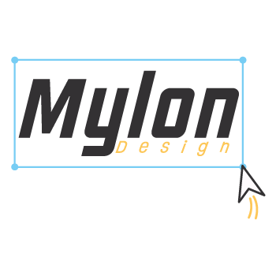

SOBRE MIM

Hello World! Meu nome é Maylon Evangelista, sou formado em Design Gráfico e busco cada vez mais me aprimorar em novas tecnologias, trabalho hoje como Designer Arte-Finalista e produtor gráfico. Recentemente tenho passado por uma transição em minha carreira, visando aprender mais sobre o desenvolvimento web front-end, tenho obtido um bom conhecimento em Javascript e a criar estruturas de websites utilizando as tecnologias Html:5 e Css3!
Meus trabalhos em design
minhas experiências
Designer - Arte Finalista na Infoactive Scanbox
Março 2023 - Hoje
Designer Social Media na Prince Of Streets - Skateshop
Fevereiro 2022 - Janeiro 2023
Auxiliar em RP & Designer - Arte Finalista no Exército Brasileiro
Março 2021 - Janeiro 2022